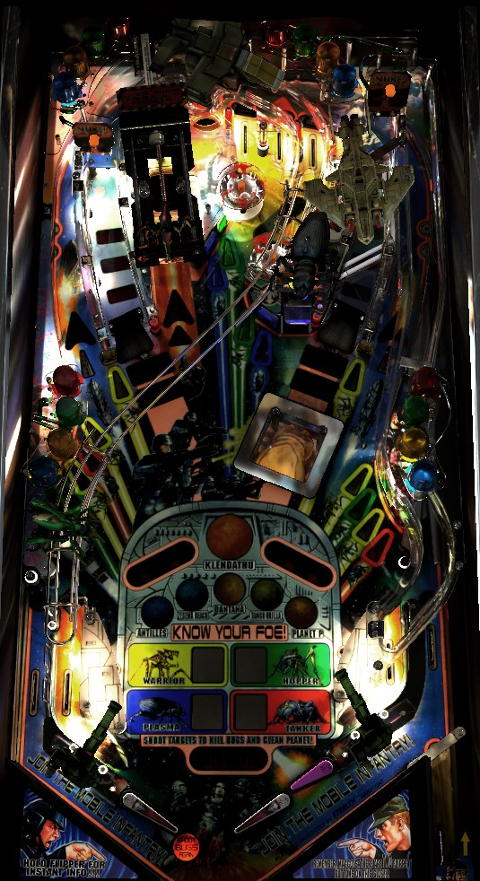

Always be playing for one of the game's three multiballs; they all have significant value. The most straightforward is standard Multiball, which is achieved by shooting the Warrior toy near the center of the table many times, and requires shooting ramps for jackpots. Orbit Multiball is achieved by making in lane -> orbit or orbit -> orbit combos, and requires shooting more orbtis for jackpots. Planet Multiballs are qualified by clearing the displayed number of bugs on the playfield; Planet Multiball can (and should) be declined by shooting the center scoop to advance planets, because Planet Multiball is more valuable if it is used on multiple completed planets at once.
There are two flavors of skill shot. For the conventional skill shot, plunge the ball normally to the top lanes. Use the flippers to rotate which lane is flashing. If the ball rolls through the flashing lane, you instantly receive 1 bonus multiplier. For the super skill shot, hold the left flipper while making a full plunge so that the ball comes all the way around the table and down the left orbit. From here, shoot the right ramp within about 5 seconds to score 5,000,000 points.
The LED digits set in the playfield describe how many of each colour bug need to be defeated to clear out the current planet. To kill a bug, hit a lit standup target corresponding to its colour. Hitting a lit standup target with the mini-flipper, operated by pressing the second right flipper button on the sie of the cabinet, gives credit for 2 bugs defeated. (You can occasionally trick the game into giving credit for a mini-flipper kill when you used one of the normal flippers by flipping the mini-flipper immediately after the normal flipper.) There are 5 planets to play through:
After clearing any planet, you must shoot the Brain Bug, a massive square target thing that pops out of the playfield from in front of the right ramp. You have about 20 seconds to capture the Brain Bug, by shooting it once for each planet you have cleared out (3 times after clearing Dantana, for example). Each shot scores 1,000,000 points. Whether you succeed or not, you now have a decision to make in the form of a hurry-up feature. The hurry-up starts at 5,000,000 points and counts down to 1,000,000. Collecting the hurry-up at the lower left scoop starts Planet Multiball. Collecting the hurry-up at the right-center Recon scoop declines Planet Multiball, moving directly to the next planet instead; doing so increases the value of Planet Multiball when you play it in the future. If the hurry-up expires, you still have to choose between Planet Multiball on the left or decline and advance on the right; you just won't get a couple million extra points for doing so quickly. Note: if you just completed Planet P, you cannot advance further, so your only option is to shoot the left hole for Planet Multiball.
The value of Planet Multiball, and the number of balls that are autoplunged for you at the start, is based on how many Planets have been cleared since the last time you played Planet Multiball (or since the start of the game, if you're playing Planet Multiball for the first time).
In Planet Multiball, the two orbits, the two ramps, and the Recon scoop are flashing for Nuke jackpots. Shoot a flashing shot to score that jackpot and light it solidly. The Recon scoop scores double the jackpot value. The lower left scoop is lit for Arm Nukes and always spots one jackpot for you, lighting a shot and scoring the associated point value. After collecting all 5 Nukes, shoot the Warrior toy just to the right of the left ramp for a Super Nuke, worth 10x the regular nuke jackpot value. Collecting a Super Nuke resets the entire sequence, requiring you to collect the 5 standard nukes again to relight the Super Nuke. This process repeats until single ball play resumes. When Planet Multiball ends, the next Planet in the sequence begins automatically, unless you have completed all 5 main planets, in which case you need to shoot the Recon scoop in the middle-right to start the wizard mode.
Klendathu wizard mode is started by clearing out all 5 planets, playing Planet Multiball after clearing Planet P, returning to single ball play, then shooting the Recon scoop. Klendathu is a 4-ball multiball. There is unlimited ball save for 45 seconds, but the mode continues for as long as there are at least 2 balls in play. On Klendathu, all 5 nuke shots are lit, and there are 9 of each colour bug to clear out. Nukes are worth 5,000,000 points (or 10,000,000 from the double nuke at the Recon scoop), and all standup targets are lit to score a bug that I believe is worth 1,000,000 points. It does not seem as though using the mini-flipper to kill a bug gives credit for 2 kills during this mode. If you successfully shoot all 5 nukes and 9 bugs of each colour, you receive a 50,000,000 points completion bonus and the entire mode resets, allowing you to keep playing as long as there are at least 2 balls in play.
When Klendathu ends, you'll be returned to Antilles, but this time it seems to have 8 yellow Warriors instead of 5- I don't know the exact bug counts or scoring for all the planets on the second time through.
It's actually called Live Fire Assault Range Multiball, but I'm not typing that every single time. Shoot the Warrior toy to the right of the left ramp repeatedly to start the standard multiball- it takes 4 total shots for the first multiball, 6 for the second, 8 for the third, and I'm not sure if it gets harder after that. Standard multiball is a 4-ball round. Both ramps are always lit for a jackpot. The jackpot value starts at 3,000,000 points; hitting an unlit coloured standup target during multiball will light it and add 75,000 to the jackpot value, for a maximum jackpot value of 4,050,000 if all 14 coloured standups are lit. After 5 ramp jackpots, the Warrior toy is lit for Super Jackpot for 15 seconds; the Super Jackpot always scores 15,000,000 points. Collecting or timing out the super jackpot resets the progression, with 5 ramp jackpots needed to light the next super jackpot- it never gets any harder, and once you increase the standard jackpot value, it stays at that level for the rest of the multiball. If single ball play resumes before any jackpots are scored, a multiball restart is available at the Warrior toy for 20 seconds; using this multiball restart will only give you 2 balls instead of the full 4.
If an orbit shot is not lit, shooting the orbit will cause a magnet to drop the ball into the top lanes. Use lane change to rotate which top lanes are lit with the flippers, and roll through an unlit lane to light it. Lighting all 3 top lanes resets them and increases the bonus multiplier by 1x. Maxing out the bonus multiplier at 10x lights the lower left scoop for an extra ball.
When the ball goes through an in lane, the opposite orbit shot is lit white. Making a lit orbit allows the ball to go all the way around the playfield and awards a letter in the word One. Spell One to lock the ball in a secret scoop at the very top of the playfield. Repeat this with the letters in the word Two to lock a second ball; locking 2 balls starts Orbit Multiball. In Orbit Multiball, the orbit shots are always lit for a jackpot worth 5,000,000 points. The first two orbit shots made during this multiball also add a ball to the playfield, meaning there can be up to 4 balls in play at a time. There's nothing else to it- just keep shooting orbits until you're back to one ball in play.
None of the game's multiballs can ever be stacked with one another, and you cannot make progress on coloured standup targets toward clearing out a planet while any multiball is running (with the obvious exception of Klendathu wizard mode).
Shoot the left ramp during single ball play to light the word Starship, and shoot the right ramp to light the word Troopers. When you light the full phrase of Starship Troopers, shoot the Recon scoop in the middle-right of the table for a Recon mystery award. Alternatively, keep shooting ramps to re-earn Starship Troopers, because each completion increases your Recon Level up to a maximum of 6. The higher your Recon Level is, the better the mystery award you receive. I have listed a selection of mystery awards below roughly from least to most valuable; presumably, increasing your Recon Level increases the probability that you'll receive an award further down this list.
When the lower left scoop is not lit for anything else, shoot it to earn credit toward your Rank. At 5 shots, you score 5,000,000 points and become a Squad Leader; at 10 shots, you score 10,000,000 points and become a Corporal; at 16 shots, you earn an instant extra ball and become a Sergeant. I don't know how much further it goes; frankly, it's not orth pursuing given how hard it can be to shoot the lower left scoop on purpose.
Starship Troopers has a mostly conventional in/out lane setup. In lanes light the opposite orbit for progress toward Orbit Multiball. Out lanes can be lit for Special, but I have no idea how (maybe a rare or high-level Recon award?). There are two flippers on the right side, operated with two separate flipper buttons. Shooting a coloured standup with the mini-flipper counts as 2 kills for that bug type. It is possible to drain between the two right flippers, but since they use different buttons and are different sizes, it's pretty hard to scissor drain by accident.
Bonus is counted as simply 100,000 points for each coloured bug killed on that ball, times the bonus multiplier from the top lanes (increased 1 at a time per completion, max 10x). There is no mid-ball bonus collect and I am not aware of a way to hold base bonus or multiplier to the next ball.